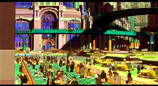

| Metropolis (SE)/ B,B |
| Columbia/2000/109/ANA 1.85 |
Metropolis is my first experience with
Anime, the Japanese animation that has taken comic strip sensibilities to
new artistic frontiers, I can't view Metropolis by comparing it to
others of the genre. For me, the animation, in it's staccato delivery, was
all right, but it surely did not blow me away. In fact, it looked very
much like an animated comic strip, which I suppose is appropriate. The
biggest difference is the approach to the material. It's composed with
cinematic sensibilities, much like the best of Pixar and Dreamworks'
newest animation incarnations. There are pans and cuts, more likely in a
standard feature film, that punctuate and move the action along.
Taking Metropolis on its own terms, if I had to
liken it to any films of the past, it's most closely related with the B
serials of yesteryear. Flash Gordon comes to mind. Some of the future
concepts could has slipped through the cracks at a Buck Rogers art
conference. Certainly, the parallels of films past make interesting fodder
for cinema studies. The jumping off point from Fritz Lang's classic silent
scifi film Metropolis works very well. Much of the look is inspired
by the sets of the silent classic and the robot creation Tima, the
ultimate symbol of Lang's great film, is the central mystery and power of
this animated Metropolis. There are robot detectives reminiscent of
Blade Runner and a romance between a human and an advanced humanoid
robot as in that film.
 |
|
One of the many imaginative
cityscape views. ©Columbia
|
Metropolis is yet another
tale of the quest for absolute power, but it is twisted through the
circuits of a robot worker society. As the city celebrates the completion
of the Ziggurat, a futuristic tower rising high into the rafters of the
city, Shinsaku Ban, a private investigator from Japan and his nephew
Kenichi have arrived in Metropolis to on a tip that renegade scientist
Doctor Laughton is hiding out and secretly working working in Metropolis.
The elected government is seemingly in control, but other powers are at
work. Duke Red who has commissioned the building of the Ziggurat, a
powerful computer control center supposedly designed to make life better.
Duke Red controls a somewhat undefined quasi street force run by his
adopted son Rock. An underground band of dissidents is fermenting
rebellion. Motivations of the bad guys are not crystal clear. Metropolis
does supply an edgy short circuit or two that goes way past what I would
have expected from the material.
There's even a touch of romance as Kenichi and his
uncle discover Tima, Laughton's creation, and when she is left abandoned,
Kenichi makes a connection with her. It's Kenichi's bond with Tima that
fuels much of the action as Rock hunts furiously to eliminate them before
Duke Red brings Tima to her ultimate destiny.
Based on the late 1940s Japanese comic strip from
Osamu Tezuko, this visualization of the future is brought to animated life
by acclaimed director Rintaro. The director gets the action moving at a
swift pace. The script is mostly action movie with very little humor. One
inspired moment is the robot fire department sequence put together like a
synchronized dance number left over from a Busby Berkeley musical.
Violence is pretty cheap in this Metropolis, but blood seems absent from
artist's palette.
The interesting moody music that accompanies the
film is a huge asset, especially in the chase sequences as Kenichi and
Tima try to avoid the murderous pursuit of Rock. The storytelling elements
are very comic strip in their simplistic manipulations and
characterizations, in synch with the material and genre. The visual style
is fairly crude, like a comic strip brought to stop-action life. It lacks
the visual splendor of some of the best of recent animations. The more
shadowy sequences are drawn with fine visual sensibilities. Even narrative
style could be considered choppy, much like the animation here and
certainly keeping beat with the staccato rhythms of comic books.
I was expecting more from this transfer of Metropolis.
It's good enough, but there are aspects less than acceptable. There are
lots of motion artifacts on the cityscape pan at the beginning of chapter
4, appearing almost like composite source material, which was visually
obvious and disturbing. Black levels are good and shadow detail works very
well. Some of the scenes are somewhat soft and color bleeding is subtly
evident. The Dolby Digital 5:1 sound has wonder spatial design with fine
directionality and openness.
Delivered by Columbia in a special edition, most
of the supplemental materials are contained on an included minidisc.
There's a documentary, The Making of Metropolis, animation comparisons,
filmmaker interviews, with English subtitles, a written history of
Metropolis, and a photo gallery.
Will Metropolis seduce me into the world
of Anime? I doubt it. It's entertaining, but it's no Shrek or Toy
Story for my money. Yes, I am glad to have experienced the much
ballyhooed animation genre and I enjoyed Metropolis enough. |
|
|
|

Selections from the Feature
Archive include articles on Akira Kurosawa, Blonde Bimbos, Frank Darabont, Steven Culp, John Herzfeld or Vietnam: The Hollywood Pariah, and many
more....
The Bitch Brigade

A line-up of lean-lipped actresses who marched through
Hollywood in a high heeled goose step armed with razor sharp dialogue.
Click on the image to read all about them.

The Movie Poster
Archive includes extensive poster images from the films of stars like
Susan Hayward, Kirk Douglas, Katharine Hepburn and many more. Our
featured star is Errol Flynn.

The Adventures of Baron Munchausen/A,A-

Director Terry Gilliam's richly detailed interpretation of the
outlandishly imagined and fabricated exploits of the legendary
eighteenth-century German adventurer and storyteller.
 
ISF Monitor
Calibrations in the Tristate New York area. Lots of hardware
info and frequent hardware peaks from video expert Kevin Miller. They may
be judgmental, but that's the point, isn't it. Lots of DVD reviews plus
news and more.

Everything you wanted to know about animation on DVD. Reviews,
news, forum. Webmaster Chris Beveridge.

Manufacturer of computer-video interfaces, switchers, distribution
amplifiers, computer-video scan converters, and high resolution cable.
Found in many high end home theater systems.

Comprehensive DVD review database. Easy to use interface with
specific region searches.
Werner Herzog Film
![[ Werner Herzog ]](../images/werner-herzog.jpg)
The Web site of director Werner Herzog includes lots of great material. A
perfect stop for anyone who admires his films.

DVD Demystified makes it all clear. The official Internet DVD
FAQ for the rec.video.dvd Usenet newsgroups.

Excellent resource with DVD reviews, forum and more. Home of
the DVD Savant.
MRQE
Find reams of movie and DVD reviews at the Movie Review Query
Engine, a index of reviews appearing on the Internet.
|